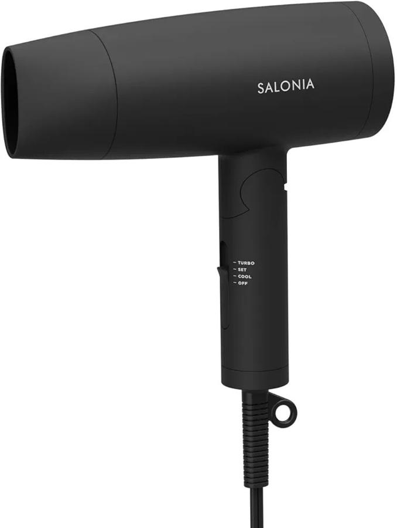
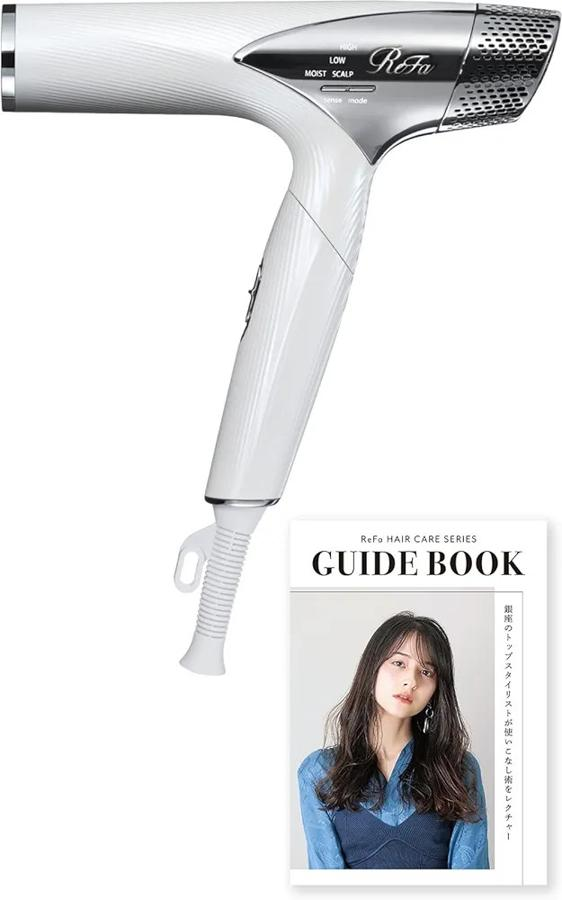

ここ5年ほどダイソンのドライヤーを使っていたんだが、最近調子が悪い。 まず、温度を変えるボタンを押すと「ピッ」という音がすることがある。これは普通はなんの音もならないはずだが最近気になるようになった。 そして、電源ケーブルの一部分が異常に熱を持つようになってしまった。火傷しそうなほどに熱くなる。おそらく、その部分が内部で断線か何かしており、ケーブル被覆に触れてしまって熱くなっているのだろう。ダイソンのドライヤーは1200Wもあるし。
熱くなっちゃうのが普通に困るので、このまま使い続けるのは無理だと判断し、買い替えることを決めた。
今の候補は、まずサロニアのSL-013だ。

これはAmazonで5300円程度と安く、その割に見た目がスッキリしているところが良いと思っている。私がドライヤーに求めるのは風が強いこととコンパクトなことなのだが、この点も満たしてくれていそうだ。
もうひとつの候補が、リファのビューテックドライヤースマートだ。

こいつは38,000円とかなり高い。風は強く、見た目は小さいというより「細い」という感じだ。 こちらは温度やイオンなどで、単に乾かすより髪がツヤツヤになるのが売りらしい。
これらを比較して購入検討しているが、リファに決まりそうな雰囲気だ。まず私はAmazonのポイントを20,000ポイントほど保有しているので、まあ38,000円はギリ出せる。長く使うことを考えると、品質の良いものを買っておくに越したことはまあない。 不安なのは、リファのドライヤーが本当に髪をツヤツヤにしてくれるのかどうかだ。私は髪質がパサつきやすいため、髪がツヤツヤになってくれるなら嬉しい。でも、ドライヤーで何故髪のツヤが変わるのかいまいち理屈がわかっていない。レビューはかなり良いが、高いのを買ったから良い気がしているだけの可能性は大いにあるだろう。
悩み疲れたので今日はもう寝よう。ダイソンのドライヤーが発火するまであとどのくらいか。